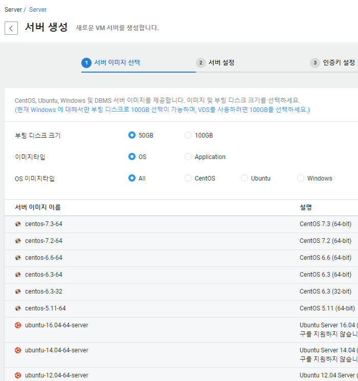
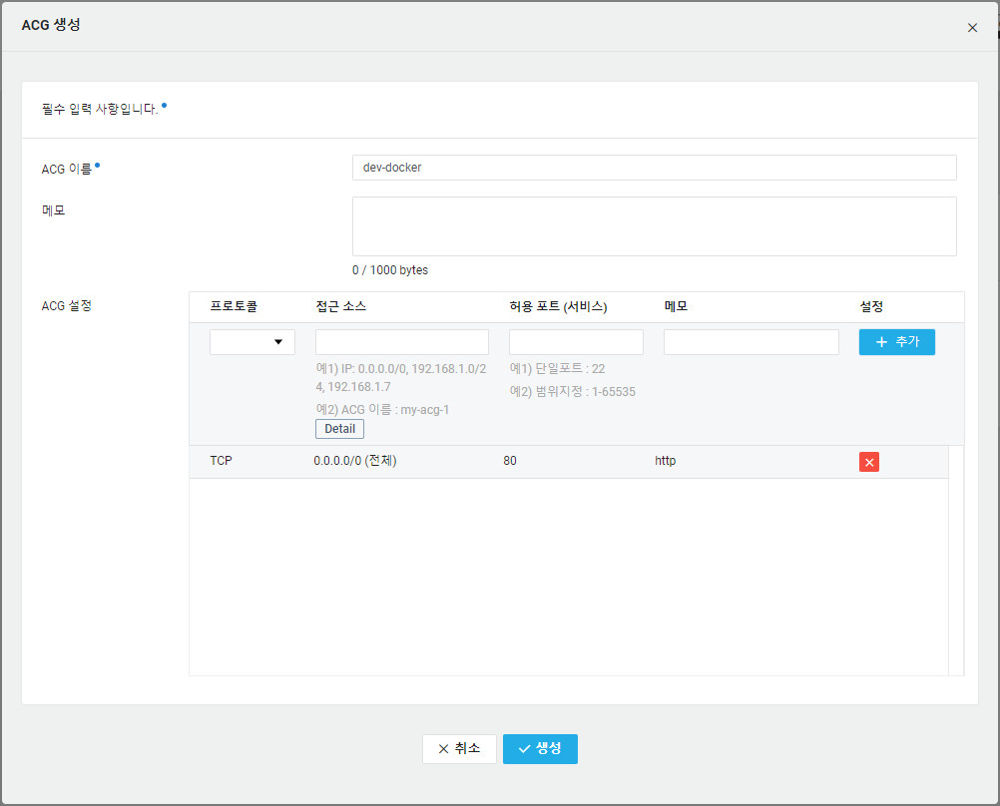

GyuMin
NAVER CLOUD PLATFORM
서버생성
https://console.ncloud.com
위의 url을 클릭하여 네이버 클라우드 플랫폼의 콘솔화면으로 이동한다.
콘솔 첫화면에는 현재 사용중인 플랫폼에 대한 정보를 알 수 있는 대쉬보드를 보여준다.
서버를 생성하기 위해 왼쪽 하단의 Server > Server메뉴를 클릭하여 들어간다. 상단의 서버생성 버튼을 클릭한다. 서버 생성을 위한 디스크  
Prev